컴퓨터활용능력-3급(폐지) (2003-09-28 기출문제)
1과목: 컴퓨터 일반
1. 비트(bit)로 표현할 수 있는 값의 종류는?
- 1
- 2
- 3
- 4
(정답률: 65%)

2. 고성능의 데이터 처리나 웹서버용으로 사용되고 주로 RISC 계열의 프로세서(CPU)를 채택하는 컴퓨터는 다음 중 어느 것인가?
- 팜탑 컴퓨터
- 랩탑 컴퓨터
- 파워스테이션
- 워크스테이션
(정답률: 78%)
3. 윈도우98의 창(윈도우) 구성에서 제어 아이콘에 관한 설명중 거리가 먼것은?
- : 창을 현재 크기보다 작게 만든다.
- : 창이 전체화면 크기로 커진다
- : '전체화면 표시' 단추를 클릭하기 전의 창 크기로 복귀한다.
- : 프로그램을 종료한다.
(정답률: 87%)
4. 다음 그림은 워드패드의 창을 나타낸 것이다. 작업공간에서 작성한 1번 문장을 2번 문장으로 변경하고자 할 때 필요한 단추는 어느 것인가?
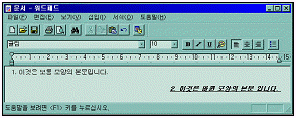
(정답률: 84%)
5. 외부로부터 허가받지 않은 불법적인 접근이나 해커의 공격으로부터 내부의 네트워크를 효과적으로 보호해주는 역할을 하는 시스템을 무엇이라 하는가?
- 방화벽(firewall)
- 라우터(router)
- 게이트웨이(gateway)
- 스위치(switch)
(정답률: 93%)
6. 모니터의 크기를 나타내는 설명으로 가장 올바른 것은?
- 화면의 대각선 길이로 나타내며, 단위는 inch이다.
- 화면의 둘레 길이로 나타내며, 단위는 inch이다.
- 화면의 가로 길이로 나타내며, 단위는 inch이다.
- 화면의 세로 길이로 나타내며, 단위는 inch이다.
(정답률: 78%)
7. 소프트웨어는 시스템 소프트웨어와 응용소프트웨어로 분류된다. 시스템 소프트웨어와 가장 거리가 먼 것은?
- 컴파일러(compiler)
- 스프레드시트(spread sheet)
- 어셈블러(assembler)
- 링커(linker)
(정답률: 66%)
8. 인터넷에서 실시간으로 대화를 나눌 수 있는 공간을 제공하는 서비스는?
- IRC
- Gopher
- WAIS
- Archie
(정답률: 54%)
9. 1 기가 바이트(Giga Byte)는 정확히 몇 바이트(Byte)인가?
- 1024 Bytes
- 1024 x 1024 Bytes
- 1024 x 1024 x 1024 Bytes
- 1024 x 1024 x 1024 x 1024 Bytes
(정답률: 68%)
10. Windows 98에서 시스템 종료에 관한 설명이다. 잘못된 것은 어느 것인가?
- 작업 표시 줄의 왼쪽 끝에 있는 [시작] 버튼을 누르고 시작 메뉴에서 [시스템 종료]를 선택하여 정상적인 종료를 하도록 한다.
- 바탕 화면에서 <Alt>+<F4> 키를 누르면 나타나는 [Windows 종료] 창에서 [시스템 종료]를 선택하여 정상적인 종료를 하도록 한다.
- [Windows 종료] 창에서 [시스템 종료]를 선택한 다음 전원을 꺼도 좋다는 메세지가 나타난 후에 시스템의 전원을 내려야 한다.
- 재 부팅을 하려면 <Ctrl>+<Alt>+<Delete> 키를 한번 누르면 된다.
(정답률: 82%)
11. 인터넷에서 사람이 사용하는 도메인 네임을 컴퓨터가 인식할 수 있도록 IP 주소로 바꾸어 주는 컴퓨터를 무엇이라고 하는가?
- DNS 서버
- 프록시 서버
- 웹 서버
- 메일 서버
(정답률: 93%)
12. 윈도우98의 시작단추를 클릭하면 나타나는 시작메뉴에 포함되지 않는 메뉴는?
- 프로그램
- 문서
- 실행
- 시스템 시작
(정답률: 78%)
13. 웹브라우저 기능 중에서 아래의 설명에 해당하는 기능은 무엇인가?
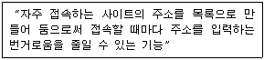
- 목록보기
- 검색
- 즐겨찾기
- 새로고침
(정답률: 95%)
14. 바탕화면에 여러 화면이 펼쳐있을 때 그 중에서 활성화된 창만 캡쳐(Capture)하려고 한다. 사용 단축키는 무엇인가?
- [Ctrl]+[C]
- [Alt]+[Print Screen]
- [Shift]+[Print Screen]
- [Ctrl]+[Print Screen]
(정답률: 85%)
15. 윈도우 98 운영체제에서와 같이 사용자가 마우스를 이용하여 아이콘을 클릭 하거나 더블 클릭 하여 명령을 수행시켜 보다 쉽게 컴퓨터를 동작 할 수 있게 하는 방식을 무엇이라고 하는가?
- CUI(character user interface)
- GUI(graphic user interface)
- CU(control unit)
- POST(power on self test)
(정답률: 74%)
16. 프린터의 인쇄 작업은 컴퓨터의 처리 속도에 비하여 매우 느리기 때문에 인쇄할 동안 기다리는 단점이 있다. 이를 보완하기 위한 방법으로 프린트할 자료를 일정한 기억 장소에 모아 두었다가 출력하는 방법을 무엇이라 하는가?
- 저장 기능
- 프린터 기능
- 플러그 기능
- 스풀링 기능
(정답률: 90%)
17. 네트워크와 IP 노드 수의 빠른 증가로 인해 32비트 IP주소 고갈 문제를 해결하기 위해 만든 128비트 IP주소 체계는?
- IPv4
- IPv5
- IPv6
- IPv16
(정답률: 70%)
18. 다음 중 보조 기억 장치의 특성에 대한 설명으로 올바르지 않은 것은?
- 주기억장치에 비해 속도가 빠르다.
- 한번 저장된 자료는 전원 공급이 끊기더라도 유지된다.
- 일반적으로 주기억장치에 비해 대용량을 갖는다.
- 주기억장치에 비해 가격이 싸다.
(정답률: 66%)
19. 컴퓨터의 연산 속도의 단위를 가장 느린 것부터 순서대로 나열된 것은?
- fs → ps → ns → μs → ms
- ps → fs → ns → μs → ms
- ms → μs → ns → ps → fs
- ms → μs → ns → fs → ps
(정답률: 71%)
20. 아래의 그림과 같이 탐색기에서 Temp 폴더 속에 있는 다른 폴더나 파일들의 전체용량을 알기 위한 방법으로 옳은 것은?
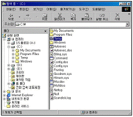
- 해당 폴더를 선택한 후에 편집메뉴에서 모두선택 항목을 선택한다.
- 해당 폴더를 선택한 후에 도구메뉴에서 폴더옵션 항목을 선택한다.
- 해당 폴더를 선택한 후에 마우스의 오른쪽 버튼을 눌러서 나타나는 팝업메뉴에서 등록정보 항목을 선택한다.
- 해당 폴더를 선택하면 탐색기의 상태표시줄에 전체용량이 나타난다.
(정답률: 56%)
2과목: 스프레드시트 일반
21. 셀에 입력한 문자열의 길이가 셀의 열 너비보다 긴 경우, 다음과 같이 셀에 표시하기 위한 셀 서식의 맞춤기능으로 옳은 것은?
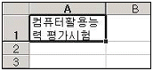
- 셀 병합
- 셀에 맞춤
- 텍스트 줄 바꿈
- 방향
(정답률: 74%)
22. 다음 중 인쇄할 때 매 페이지마다 같은 행이나 열을 인쇄하려면 페이지 설정 대화상자에서 어느 탭을 사용하여야 하는가?
- 페이지
- 여백
- 머리글/바닥글
- 시트
(정답률: 59%)
23. 다음 워크시트에서 [A3] 셀에 입력된 =SUM($A$1:$A$2) 수식을 [B3] 셀에 복사하였을 때, [B3] 셀의 계산 결과로 올바른 것은?
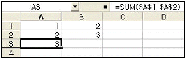
- 2
- 3
- 4
- 5
(정답률: 58%)
24. 아래의 성적 데이터에서 중간시험과 기말시험을 비교하여 기말시험 성적이 향상된 경우에만 향상된 점수의 20%를 가산점으로 주려고 할 때의 [D2] 셀에 입력할 수식으로 올바른 것은?
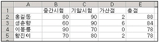
- =(C2-B2)*0.2
- =IF(C2-B2>0,20%,0)
- =IF(C2-B2>0,(C2-B2)*0.2,0)
- =IF(C2-B2>0,0,(C2-B2)*0.2)
(정답률: 66%)
25. 다음 그림과 같은 상태에서 [삽입]-[워크시트]를 선택하여 새로운 워크시트를 삽입했을 때, 새로 삽입되는 ‘Sheet4’의 삽입 위치에 대한 설명으로 올바른 것은?
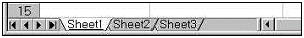
- ‘Sheet1’의 앞
- ‘Sheet1’과 ‘Sheet2’의 사이
- ‘Sheet2’와 ‘Sheet3’의 사이
- ‘Sheet3’의 뒤
(정답률: 62%)
26. 아래에 주어진 차트에 설정되어 있는 차트 구성 요소가 아닌 것은 어느 것인가?
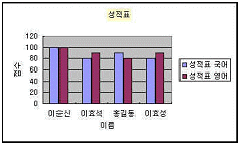
- 그림 영역
- 범례
- 데이터 레이블
- 차트 제목
(정답률: 70%)
27. 다음 중 워크시트에 분수 1/2이 표시되도록 데이터를 입력하는 방법에 대한 설명으로 올바른 것은?
- 1/2를 입력한 후 [Enter] 키를 누른다.
- 0.5로 환산하여 입력한 후 [Enter] 키를 누른다.
- 숫자 0을 입력하고 한 칸 띄운 다음 1/2를 입력한 후 [Enter] 키를 누른다.
- 숫자 0을 입력한 후 붙여서 1/2를 입력한 후 [Enter] 키를 누른다.
(정답률: 68%)
28. 다음 중 수식에 대한 설명으로 가장 옳지 않은 것은?
- 수식은 항상 ‘=’ 기호로 시작한다.
- 기본적으로 수식에서 참조하는 셀의 값이 변경되면 관련 셀의 값은 자동으로 재계산된다.
- 기본적으로 수식이 입력된 셀에는 수식이 표시되고 수식의 결과 값은 수식 입력줄에 나타난다.
- 수식은 연산자, 함수, 상수, 셀 참조 등으로 구성된다.
(정답률: 74%)
29. 다음 중 주어진 수식에 대한 수식의 결과 값이 옳지 않은 것은?
- =DAY("2003-11-25") -> 25
- =ROUNDUP(15.974,2) -> 15.97
- =ABS(15-20) -> 5
- =INT(17.125)-> 17
(정답률: 79%)
30. 다음 중 자동 필터에 대한 설명으로 옳지 않은 것은?
- [데이터]-[필터]-[자동 필터]를 선택하여 실행한다.
- 첫 번째 행의 각 열에 필터 단추가 표시된다.
- 조건을 설정할 열의 필터 단추를 클릭 한 후 원하는 값을 선택하면 해당 값을 가진 데이터만 표시된다.
- 사용자 정의 자동 필터를 이용하면 세 개의 조건을 설정할 수 있으며 *, ?를 사용할 수 있다.
(정답률: 66%)
31. 다음 중 엑셀에서 지원하는 표준 차트의 종류가 아닌 것은?
- 방사형
- 가로 막대형
- 도표형
- 표면형
(정답률: 72%)
32. 다음 중 워크시트 화면상에 [Num Lock], [Caps Lock] 등의 키의 설정 상태를 나타내는 부분에 대한 명칭으로 올바른 것은?
- 상태 표시줄
- 수식 입력줄
- 이름 상자
- 윗주
(정답률: 70%)
33. 다음 중 워크시트의 이름으로 사용될 수 없는 것은?
- 워크시트#1
- 워크시트1
- Work-1
- Work/1
(정답률: 60%)
34. 다음 중 [페이지 설정] 대화상자에서 인쇄시 매 페이지 상단의 가운데에 “매출 실적 분석”이라는 문자열을 인쇄하기 위해 사용하는 기능으로 올바른 것은?
- 인쇄영역
- 머리글/바닥글
- 행/열 머리글
- 자동 맞춤
(정답률: 74%)
35. 다음 중 셀에 특수 문자 “☏”를 입력하는 방법에 대한 설명으로 올바른 것은?
- 한글 “ㅁ”을 입력한 후 [F3] 키를 눌러서 특수문자 목록상자에서 “☏”를 찾아 클릭 한다.
- [삽입]-[특수문자입력]을 선택하여 특수문자 목록상자에서 기호 “☏”를 찾아 클릭 한다.
- 한글 “ㅁ”을 입력한 후 [한자] 키를 눌러서 특수문자 목록상자에서 “☏”를 찾아 클릭 한다.
- 한글 “ㅏ”를 입력한 후 [한자] 키를 눌러서 특수문자 목록상자에서 “☏”를 찾아 클릭 한다.
(정답률: 87%)
36. 다음 차트의 종류로 올바른 것은?
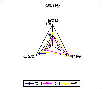
- 방사형
- 원형
- 도넛형
- 영역형
(정답률: 79%)
37. 다음 중 워크시트에서 특정 영역만 인쇄하려고 할 때 제일 먼저 실행해야 하는 기능으로 올바른 것은?
- [파일]-[인쇄] 를 선택한다.
- 인쇄할 범위를 설정한다.
- [파일]-[인쇄 미리보기] 를 선택한다.
- [파일]-[페이지 설정] 을 선택한다.
(정답률: 65%)
38. 다음 중 기존에 입력되어 있는 셀의 데이터를 수정하기 위해서 사용되는 키로 올바른 것은?
- [F1]
- [F2]
- [F3]
- [F4]
(정답률: 75%)
39. 아래의 차트 도구 아이콘을 왼쪽에서부터 순서대로 설명하였을 때에 해당 아이콘에 대한 설명으로 옳지 않은 것은?
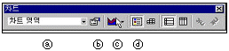
- ⓐ 차트의 개체를 지정한다.
- ⓑ 선택된 차트 구성 요소 항목에 대한 서식을 지정할 수 있다.
- ⓒ 차트의 종류를 선택할 수 있다.
- ⓓ 제목 표시여부를 설정한다.
(정답률: 69%)
40. 아래 그림과 같이 범위를 설정한 후 채우기 핸들을 이용하여 [Ctrl] 키를 누른 상태에서 [D1] 셀까지 드래그 하였을 때 [D1] 셀의 값으로 올바른 것은?
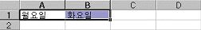
- 월요일
- 화요일
- 수요일
- 목요일
(정답률: 49%)